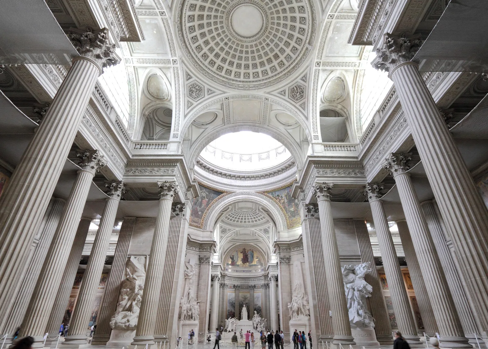

Alexadre III Bridge

Panthèon

Place de la concorde
Paris, also known as the "City of Light," is a beautiful and historic destination that offers a wide range of things to see and do. Some reasons to visit Paris include:
- The Eiffel Tower: This iconic structure is a must-see for any visitor to Paris. Visitors can take an elevator to the top for a panoramic view of the city.
- The Louvre: This famous museum houses a wide variety of art and artifacts, including the Mona Lisa and the Venus de Milo.
- The Champs-Élysées: This famous avenue is lined with shops, cafes, and theaters, and is a great place to take a leisurely stroll.
- The Seine River: Taking a boat tour along the Seine is a great way to see many of Paris' famous landmarks, including Notre-Dame Cathedral and the Musée d'Orsay.
- The cuisine: From croissants to escargots, the food in Paris is delicious and varied. Be sure to try some of the local specialties during your visit.
Paris is also known for its rich history, culture, and architecture. The city has many famous landmarks, museums, and art galleries that are worth visiting. Paris is also a great destination for fashion, shopping, and nightlife. In addition, Paris is a great place to experience the beauty of nature, with many parks and gardens to explore.
Whether you're looking for a romantic getaway, a cultural adventure or simply a memorable trip, Paris is sure to provide an unforgettable experience.